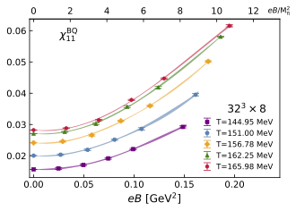
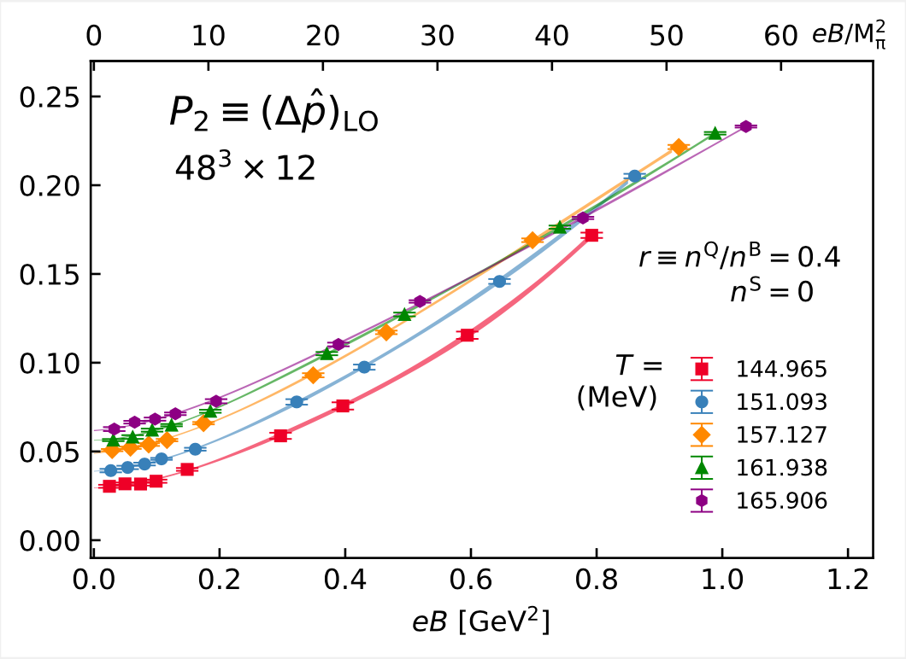
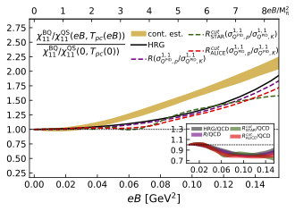
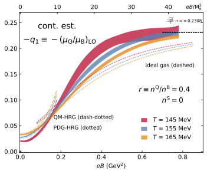
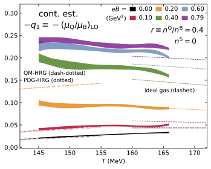
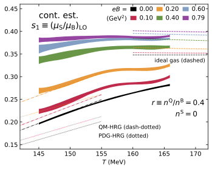
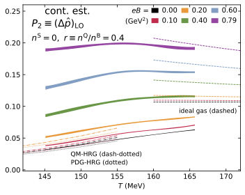
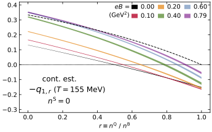

QCD thermodynamic properties under extreme conditions, such as high temperatures $T$, finite chemical potential $\mu$, as well as strong magnetic fields $eB$, are central to understanding the strongly interacting matter in the early universe, neutron stars, and heavy-ion collisions.
In particular, strong magnetic fields, reaching magnitudes comparable to characteristic interaction scales, can profoundly alter these properties. In this program, we performed high-precision and computationally intensive simulations to understand the thermodynamics of QCD at non-zero baryon chemical potential and strong magnetic fields up to $eB \lesssim 0.8~\mathrm{GeV}^2$.
Relevant publications: PRD 112 (2025) 094508, PRD 111 (2025) 114522, PRL 132 (2024) 201903
Keywords: Lattice QCD, Heavy-ion collisions, QCD magnetometer, QCD equation of state







